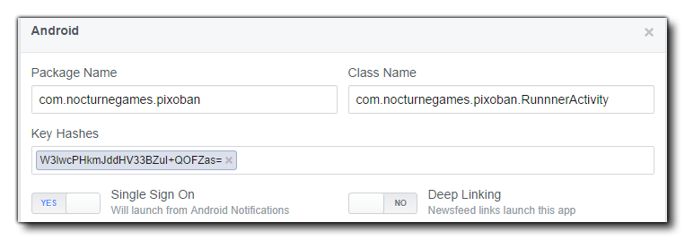
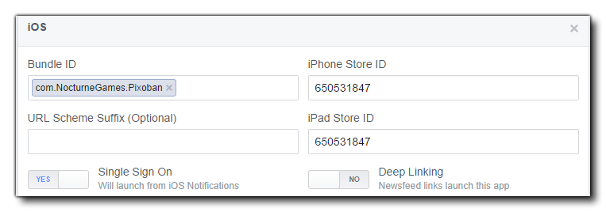

When you set up your Facebook page to accept an Android app, you need to give the Android package name (reverse URL format and should conform to your game bundle ID), and you can set the class name to be <package_name>.RunnerActivity. GameMaker Studio 2 also supports Single Sign-On for Android apps, so you can enable this to allow the game to be launched from the Android Facebook app notifications. There is no need to activate Deep Linking as it is not supported by GameMaker.
There is also a section where you are required to enter the Android Keystore Hash that is unique to the keystore that you are using for your game. As this can be quite difficult to get, GameMaker Studio 2 can generate it for you from the Android Preferences, and you can then simply copy and paste it into the required part of the Facebook setup page.
The image below shows how your final Facebook Android section should look: 
The basic setup for iOS apps with the Facebook functions is the same as for Android, however there are a few key things that need to be correctly set up on the actual Facebook Developers page for your app:
- Bundle ID: Must match with the bundle ID of your game (usually of the form "com.{yourcompany}.{yourgame}").
- iPhone App Store ID: This is the Apple ID associated with your game as found on iTunes Connect for the iPhone game.
- iPad App Store ID: As above except for iPad.
- Facebook Login: GameMaker Studio 2 supports Single Sign-On for iOS apps, so you can enable this to allow the game to be launched from the iOS Facebook app.
- Deep Linking: This is not supported, so keep disabled.
- URL Scheme Suffix: This is not supported, so leave blank.
 Also note that the iOS Facebook SDK version is 3.16.1 which means that the minimum iOS target is version v5.0 and above.
The HTML5 target works almost exactly the same as all previous target modules, however you cannot test the functions locally, meaning that you will have to compile and upload to your server to test. There is also one additional function that has been added to create offerwall compatibility for HTML5 games that is not available for other platforms:
The functions listed below are for integrating your game with Facebook:
facebook_init() function before any of these functions
can be used correctly.There are a few things to note when working with Facebook, and these are listed below:
- The login function is only called once on a publish action through GameMaker Studio 2, so if you login once and try to retest the button, there is no visible result.
- If you have the Facebook app installed on your android device, the login function is not visibly called at all called from a compiled app. Your app automatically logs in to the same Facebook account that you have tied to your Facebook app.
- If you intend to permit your game to publish in anyway using the Facebook functions, you need to request permission from Facebook themselves. To facilitate this, you should create at least one test user account that you've already tested as working so that Facebook can use it thus make getting permission simpler.
- When requesting permission from Facebook for your app, it's a good idea to inform Facebook that your app will do this (in the permission request notes) so that they are aware of what to look for. Also, include screenshots of your command console showing a successful login, the login screen on your device and the successful wall post on your Facebook test account.
- If you are using a test user, including screenshots from the test user's wall post and have Facebook test use the same test user.
- All text you want posted will have to be in the bottom banner of your post. Any text that is pre-filled (even if it editable by the user) is not allowed. This means your wall posts will need to be dialog posts that allow the user to write what they want.
- You will need your package name and class name to get your permissions approved through Facebook. Your package name is listed in your game settings, and the class name is your package name + ".RunnerActivity", for example: "com.macsweeneygames.catchthehaggis.RunnerActivity")
- if your game has been set to "sandboxed" mode from the Facebook dashboard, all users that wish to play your game must have been added to the list of test users on Facebook.